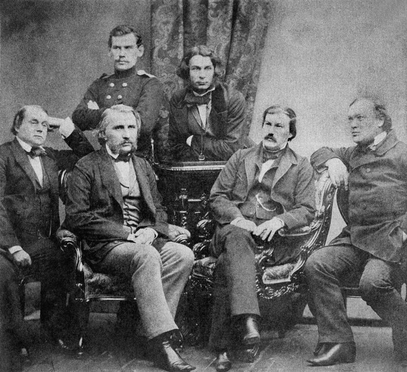
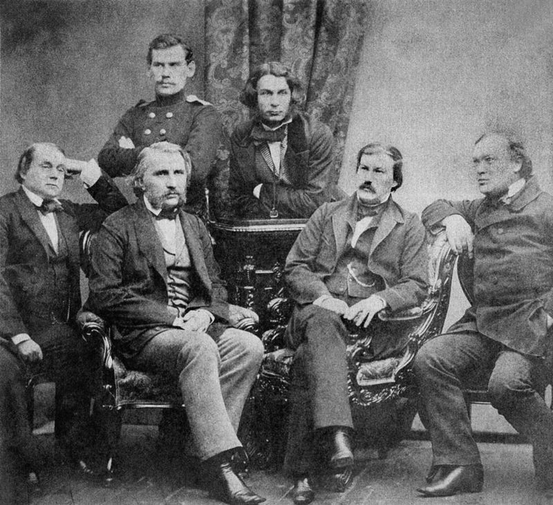

Граф Лев Никола́евич Толсто́й[К 1] (28 августа [9 сентября] 1828, Ясная Поляна, Тульская губерния, Российская империя — 7 [20] ноября 1910, станция Астапово, Рязанская губерния, Российская империя) — один из наиболее известных русских писателей и мыслителей, один из величайших писателей мира[4]. Участник обороны Севастополя. Просветитель, публицист, религиозный мыслитель, его авторитетное мнение послужило причиной возникновения нового религиозно-нравственного течения — толстовства. Член-корреспондент Императорской Академии наук (1873), почётный академик по разряду изящной словесности (1900)[5].
Писатель, ещё при жизни признанный главой русской литературы[6]. Творчество Льва Толстого ознаменовало новый этап в русском и мировом реализме, выступив мостом между классическим романом XIX века и литературой XX века. Лев Толстой оказал сильное влияние на эволюцию европейского гуманизма, а также на развитие реалистических традиций в мировой литературе. Произведения Льва Толстого многократно экранизировались и инсценировались в СССР и за рубежом; его пьесы ставились на сценах всего мира[6]. Лев Толстой был самым издаваемым в СССР писателем за 1918—1986 годы: общий тираж 3199 изданий составил 436,261 млн экземпляров[7].
Наиболее известны такие произведения Толстого, как романы «Война и мир», «Анна Каренина», «Воскресение», автобиографическая[8][6] трилогия «Детство», «Отрочество», «Юность»[К 2], повести «Казаки», «Смерть Ивана Ильича», «Крейцерова соната», «Хаджи-Мурат», цикл очерков «Севастопольские рассказы», драмы «Живой труп», «Плоды просвещения» и «Власть тьмы», автобиографические религиозно-философские произведения «Исповедь» и «В чём моя вера?» и др.
 

Материал взят с Википедия